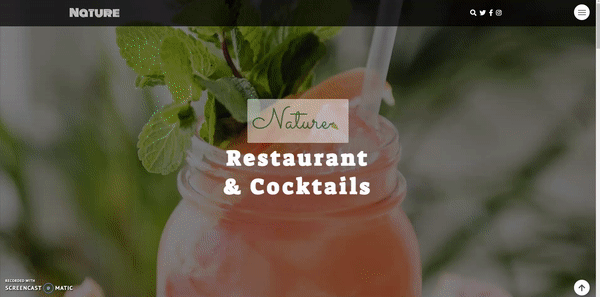

This is a static website powered by HTML, CSS and Slick - jQuery plugin for creating fully customizable, responsive and mobile friendly carousels/sliders.
Structure:
- Header
- Company logo
- Social media follow
- Navigation bar - hamburger menu
- Body
- Hero section
- What we can offer
- About us
- Meet the restaurant's team members
- Menu presentation
- Customer testimonial examples
- Contact and booking form
- Footer
- Copyrights
Features:
- Compatible with devices of all sizes
- CSS custom properties for fast and forward-looking design
- HTML and CSS minification process aims to reduce webpage loading speed
- CSS Flexbox applied to simplify complex layout design
- Font awesome icons collection
- Advanced CSS styling techniques applied: transitions, animations and image filtering
- Netlify form submission and spam filters

| Live | Code | Technologies |
|---|---|---|
 |  |   |